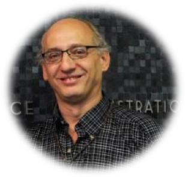

Miguel nos narrará su experiencia en este proyecto, sus motivaciones y cómo se sintió en relación con su gran responsabilidad sobre la misión de $2,5 billones y cómo, cuando las cosas empeoran, se puede lograr la calma necesaria para avanzar en una iniciativa tan audaz como la que nos estará presentando.
Expositor: 
Miguel San Martin
Jefe de ingeniería y control en el Jet Propulsion Laboratory de la NASA, lugar en el que trabaja desde 1985, en donde se dedica a analizar los problemas que se presentan durante el aterrizaje de las naves de exploración en otros planetas, lunas o asteroides.
Entre sus primeros trabajos para la NASA, se incluye la misión Magallanes a Venus y Cassini a Saturno. Diseñó el sistema de orientación de la nave sobre la base de las estrellas.
Entre otros grandes proyectos en la NASA, trabajó en las misiones Mars Pathfinder (1997) como Jefe de Ingeniería,6 Mars Exploration Rovers Spirit y Opportunity (2004), y Mars Science Laboratory Curiosity (2012) y fue asesor en las misiones Topex, Mars Polar Lander,2 Deep Impact y Phoenix. Actualmente se encuentra trabajando en el diseño de un sistema de aterrizaje para la misión hacia la luna de Júpiter, Europa.
Luego la misión Pathfinder tuvo un breve paso en una misión que pretendía traer muestras de un cometa a la Tierra, pero por problemas presupuestarios el proyecto fue cancelado 2 años después.
Es Co-inventor del sistema SkyCrane, utilizado exitosamente durante el descenso de la misión Curiosity.Misión en la que también participó en el desarrollo del software para el descenso. También es uno de los ingenieros elegidos para el video "Los 7 minutos de terror de Curiosity" de la NASA en donde explican paso a paso todo lo que sucede en esos minutos cuando la nave desciende a la superficie Marciana.
Actualmente trabaja en la misión de enviar otro rover a Marte en 2020 llamada Mars 2020, utilizando los sistemas de guiado y descenso de Curiosity. También forma parte del proyecto InSight, que al igual que Mars 2020 irá al planeta rojo, programado para el 2018.